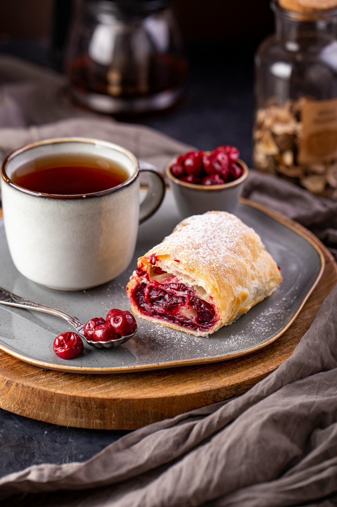

Easy Cherry Turnovers
Home

Ingredients
- 1 14.1oz box refrigerated pie crust
- 1 14oz can cherry pie filling
- 1 tsp vanilla extract
- 2 tbsp cinnamon sugar
- 1 large egg
- 1 tsp water
Steps
- Preheat oven to 180 deg C. Line a baking sheet with parchment paper.
- Dust a clean work surface lightly with flour and lay out the pie dough. Use a rolling pin to roll pie dough until 1/8-inch thick. Cut circles out of the dough using a soup bowl. Pull away extra dough and set circles aside. Press extra dough together and roll out again. Repeat the process until all the dough is used up.
- Pour cherry pie filling into a bowl and stir in vanilla extract. Mash pie filling with a fork to break up cherries.
- Whisk egg and water together in a small bowl.
- Lay one 1 circle of dough on a lightly floured surface. Spoon a generous portion of cherry filling onto the bottom half of the dough circle, leaving a 1 in border free. Fold top half of dough over the filling and press edges together. Crimp edges with a fork all the way around.
- Lightly brush cherry turnover with egg wash and sprinkle with cinnamon sugar. Set onto the prepared baking sheet. Repeat with remaining ingredients.
- Bake turnovers in the preheated oven until golden brown, 15 to 20 minutes. Let cool for 5 minutes before serving.
- Enjoy!